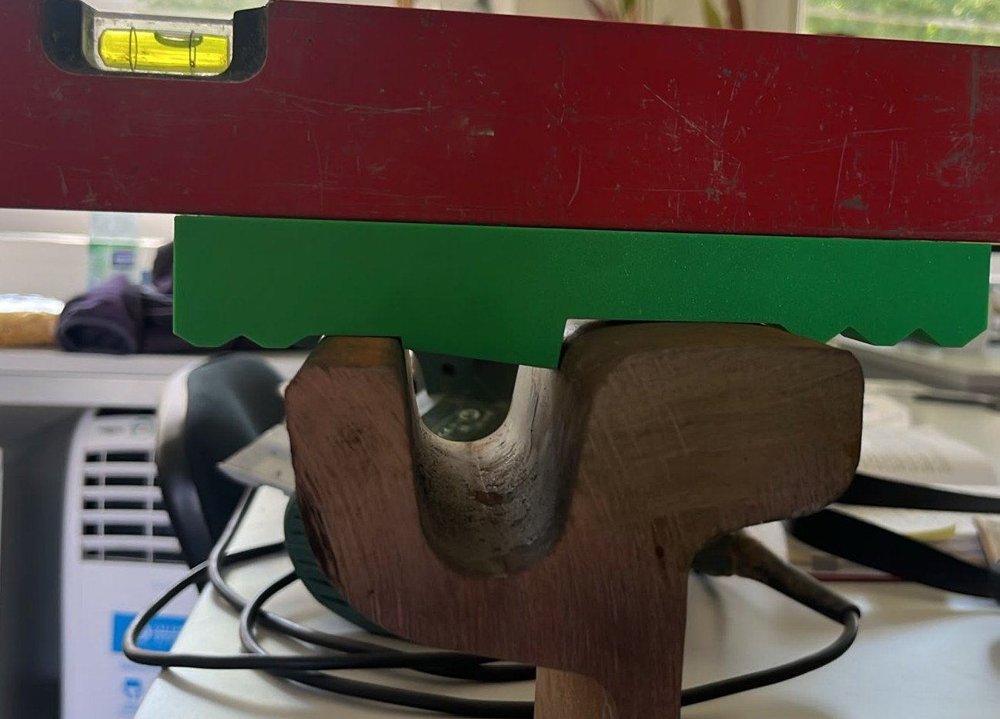
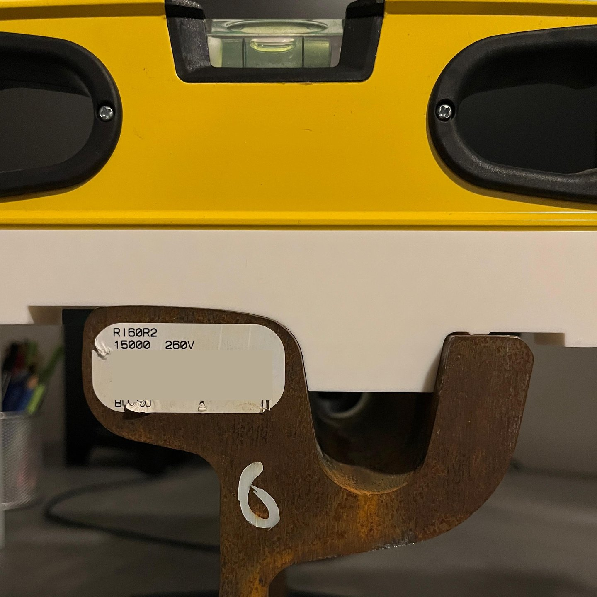

Messlehre zur Überprüfung der Höhe des Fugenvergusses an Leipziger Straßenbahnschienen mit Profil 60R2
Ausgangssituation
Nach den Schäden durch das Überlaufen geschmolzener Fugenmasse in heißen Sommerwochen 2026
entstand der Wunsch nach einer zusätzlichen Prüfmethode für die Höhe des Schienenlängsvergusses.
Diese zusätzliche Überprüfung bezieht sich auf die Kontrolle im Rahmen der Bauüberwachung
und auf LVB-Vorgaben für neugebaute Gleisabschnitte mit dem oben genannten Schienenprofil 60R2 (alte Bezeichnung Ri 60 N).
Vergusshöhe: 5 mm unter Fahrkopfoberkante, 3 mm unter Rillenkopfoberkante
Streifenbreite: 55–60 mm neben Fahrkopf, 30–35 mm neben Rillenkopf
Erstentwurf
Auf Basis einer vorliegenden DWG für die Schienenprofil-Kontur habe ich, per STL-Export, zuerst ein 50 mm langes Test-Schienenstück gedruckt.
Daraufhin folgten die ersten einfachen Prototypen, jeweils 25 mm tief.
Für einen schnellen Entwurf wurden für alle Stücke die gleichen Einstellungen gewählt (2 Schichten Außenwand, 10 % Infill „kubisch adaptiv“, Material PLA).
Die Prototypen der Messlehre sitzen auf der gedruckten Schiene in Waage, jedoch nicht auf einem Stück Stahlschiene, wie das folgende Bild zeigt:

Das Prüfen des ersten gedruckten Profils gegen das Profil der Stahlschiene zeigt nicht unerhebliche Abweichungen:


Nachkonstruktion
Mittels der (auf der Produktseite öffentlich zugänglichen) bemaßten Zeichnung des Herstellers voestalpine, und letztlich auch mithilfe der bemaßten Zeichnung aus der DIN EN 14811 (2019), wurde das Profil in AutoCAD iterativ nachkonstruiert:

Nachdem im letzten Schritt vor allem die Ausrundungen korrigiert wurden, zeigt eine Überlagerung der Profilkonturen die Abweichungen recht deutlich:


Ausgleich von Fertigungstoleranzen
Nach dem Erreichen einer Übereinstimmung des Profils mit der bemaßten Zeichnung, fällt eine weitere Abweichung auf:

Dass die Profilkontur mittlerweile korrekt konstruiert war, konnte durch einen Abgleich mit einer
vom Hersteller zur Verfügung gestellten Original-DXF verifiziert werden.
Trotzdem liegt die gemäß Profilkontur erstellte Messlehre in waagerechter Position
nur auf dem Fahrkopf, nicht jedoch auf dem Rillenkopf auf (s. vorangegangenes Bild).
Für den Ausgleich der (produktlebenszeit-freundlichen) Materialmehrung auf dem besonders vom
Verschleiß betroffenen Fahrkopf wurde an der Messlehre ein 0,65 mm hoher Steg
zur Auflage auf dem Rillenkopf ergänzt.
Der Messsteg für den Abstand zur Fugenmasse auf der Rillenkopfseite wurde entsprechend verlängert.

Spezifika der aktuellsten Version
An der entstandenen Messlehre sind die Messstege etwa mittig in den Vergussfugen (je nach Streifenbreite) angeordnet. Die Maße werden nach Länge/Breite, Höhe und Tiefe angegeben. Der Messsteg auf der Fahrkopfseite ist 20 mm breit und jener auf der Rillenkopfseite ist 10 mm breit. Die Messstege sind in der Mitte jeweils 0,1 mm höher als die Abstandsvorgabe zur Fugenmasse, um die leicht konkave Ausformung des Vergusses nach der Aushärtung auszugleichen. Mit der Gesamtbreite der Messlehre kann mittels Blick von oben zusätzlich überprüft werden, ob die vorgesehene Breite der Längsverguss-Streifen (i. d. R. max. 60 mm von Fahrkopfaußenkante und 35 mm von Rillenkopfaußenkante) eingehalten wird. Die bisher verwendete weiße Farbe des Materials hilft dabei, mittels der Ablagerung von Schienenrost, besonders beanspruchte Bereiche und Abreibungen, selbst bei vorsichtiger Verwendung, zu erkennen. Die Tiefe beträgt, wie schon bei den ersten Prototypen, 25 mm. Für eine höhere Stabilität bei der Verwendung im Außeneinsatz wurden 3 Schichten Außenwand und 25 % Infill (kubisch adaptiv) gewählt. Die Toleranz des verwendeten Drucker-Setups (Modell, Druckkopf, Düse) liegt (je nach Achse) zwischen 0,05 und 0,3 mm. Das nachfolgende Bild zeigt die aktuellste Version der Messlehre während des Drucks:

Für eine zukünftige Version werden Wünsche aus dem Einsatz gesammelt und es ist vorgesehen, die Höhe des Steges zur Auflage auf dem Rillenkopf von 0,65 auf 0,7 mm zu erhöhen.